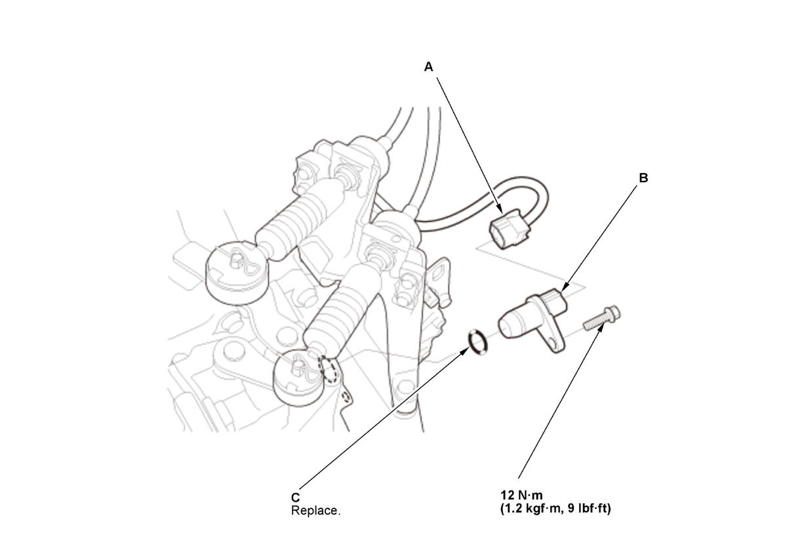

Removal and Installation
WARNING: This page is about a different variant/trim than selected.
- 12 Volt Battery - Remove
- Neutral Position Sensor - Remove
1. Disconnect the connector (A).

Courtesy of HONDA, U.S.A., INC.2. Remove the neutral position sensor (B) with the O-ring (C).
- All Removed Parts - Install
1. Install the parts in the reverse order of removal.
NOTE: Be sure to use new O-ring which should be applied a light coat of clean MTF before installation.